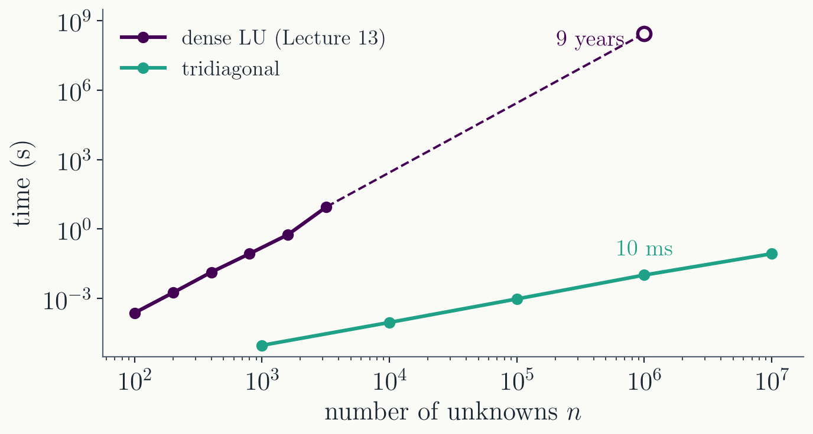
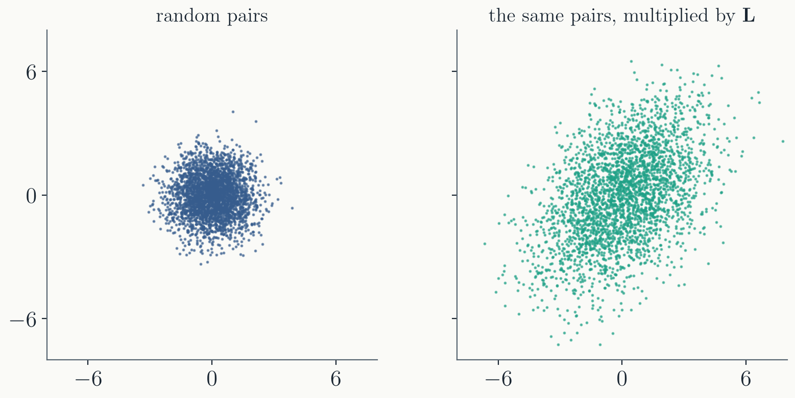
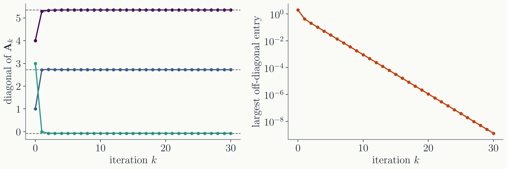

Store three vectors $\mathbf{a}$,
$\mathbf{b}$, $\mathbf{c}$ instead of the whole matrix: $3n$
numbers instead of $n^2$.
Every point coupled only to its two
neighbours: the BVP grid of Lecture 12
($b_i = -2 - \kappa^2 h^2$, $a_i = c_i = 1$), cubic splines,
implicit methods for diffusion.
Elimination stays inside the band
Below each pivot $u_{i-1}$ there is only one nonzero entry,
$a_i$. So each column needs one multiplier, $l_i$, and changes
only the next row.
That row's super-diagonal $c_i$ is
untouched, since the entry above it in row $i-1$ is zero. The
factors are
The first loop is
elimination and forward substitution together; the second is
back substitution. About $8n$ operations in all, and about ten
lines of C++.
From years to milliseconds

The same matrix, solved two ways, with our own C++ code.
Dense LU at $n = 10^6$: about 9 years
(extrapolated).
Tridiagonal at $n = 10^6$: 10 ms. At
$10^7$: 86 ms.
The time grows like $n$: twice the
unknowns, twice the time.
What about pivoting?
The recipe never swaps rows. A swap would push entries
outside the three diagonals.
It is safe when the matrix is
diagonally dominant: each diagonal entry at least as
large as the rest of its row,
$$|b_i| \ge |a_i| + |c_i|,$$
with $>$ in at least one row. Then no $u_i$ can become
small.
Matrices from grids usually are. Lecture 12:
$|{-2} - \kappa^2 h^2| \ge 1 + 1$, with $>$ in the first and
last rows.
If not, use a banded LU with pivoting
(LAPACK's gbsv, behind
solve_banded).
Banded matrices
A matrix with $p$ nonzero diagonals on each side of the main
one. Elimination again stays inside the band: about $n p^2$
operations, storage $n p$.
A 2D grid of $N \times N$ points, numbered row
by row: the neighbours above and below are $N$ places away in
the numbering, so $p = N$.
$N = 1000$: $n = 10^6$ unknowns, about
$n p^2 = 10^{12}$ operations. Of order ten minutes, instead of
9 years.
Structure turned years into minutes. Sparse
direct solvers and iterative methods go further still.
Part II · Cholesky decomposition
Symmetric positive definite matrices
Symmetric positive definite
Symmetric: $a_{ij} = a_{ji}$, so
$\mathbf{A}^T = \mathbf{A}$.
Positive definite:
$\mathbf{v}^T\mathbf{A}\mathbf{v} > 0$ for every
$\mathbf{v} \neq 0$. Equivalently, all eigenvalues are
positive.
Physics is full of
them, because they are energies:
Coupled oscillators: the potential energy
$\tfrac{1}{2}\mathbf{x}^T\mathbf{K}\mathbf{x} > 0$ for any
displacement, so the spring matrix $\mathbf{K}$ is positive
definite.
Covariance matrices of noise or of fitted
parameters;
$\mathbf{A}^T\mathbf{A}$ in least squares (Lecture 16).
$\mathbf{A} = \mathbf{L}\mathbf{L}^T$: a 2 × 2 example
For symmetric positive definite
$\mathbf{A}$, look for $\mathbf{U} = \mathbf{L}^T$:
Then solve
$\mathbf{A}\mathbf{x} = \mathbf{b}$ as with LU: forward
substitution with $\mathbf{L}$, back substitution with
$\mathbf{L}^T$.
Why use Cholesky
Half the work of LU, about $\tfrac{1}{3}n^3$,
and half the storage: only $\mathbf{L}$ is kept.
No pivoting needed. It is
stable for every symmetric positive definite matrix.
A free test. If
$\mathbf{A}$ is not positive definite, a square root of a
negative number appears. Attempting Cholesky is the cheapest
way to check.
A preview: random numbers with a shape

Later in the semester we will generate random numbers and
use them in simulations.
Left: pairs of random numbers with nothing
to do with each other form a round cloud.
Multiply every pair by the $\mathbf{L}$ of
our $2 \times 2$ example, and the cloud stretches and tilts:
the two numbers now tend to rise and fall together.
Real noise often looks like the right
panel. Cholesky is how simulations produce it, and we will
come back to it with random numbers and Monte Carlo
methods.
Tell the library what you know
numpy.linalg.solve always uses general LU with
partial pivoting (LAPACK's gesv).
scipy.linalg.solve(A, b, assume_a="pos")
uses Cholesky, for symmetric positive definite
$\mathbf{A}$. scipy.linalg.solve_banded handles
tridiagonal and banded matrices.
Eigen (C++): PartialPivLU for
general matrices, LLT for Cholesky, and a separate
module for sparse matrices.
The library cannot guess the structure. If
you do not tell it, it pays the full $n^3$.
Part III · QR decomposition
Orthogonal times triangular
$\mathbf{A} = \mathbf{Q}\mathbf{R}$
$\mathbf{R}$ is upper triangular. $\mathbf{Q}$ is
orthogonal: its columns are unit vectors, perpendicular
to each other, so $\mathbf{Q}^T\mathbf{Q} = \mathbf{I}$.
The first column of
$\mathbf{Q}$ is the first column of $\mathbf{A}$, normalized:
$-(4, 2, 1)/\sqrt{21}$. How to compute $\mathbf{Q}$ and
$\mathbf{R}$ in general: next lecture.
Why orthogonal matrices are safe
The inverse is free:
$\mathbf{Q}^{-1} = \mathbf{Q}^T$.
Lengths are preserved:
$|\mathbf{Q}\mathbf{x}| = |\mathbf{x}|$. A rotation or
reflection does not stretch anything, so it cannot amplify
rounding errors.
Solving:
$\mathbf{Q}\mathbf{R}\mathbf{x} = \mathbf{b}$ becomes
$\mathbf{R}\mathbf{x} = \mathbf{Q}^T\mathbf{b}$, then back
substitution.
The price: about twice the
work of LU. For square systems LU is the default. QR is the tool
for rectangular matrices (least squares, Lecture 16) and for
eigenvalues.
Eigenvalues from QR
Start with $\mathbf{A}_0 = \mathbf{A}$,
and repeat:
Since $\mathbf{R}_k = \mathbf{Q}_k^T\mathbf{A}_k$:
$\mathbf{A}_{k+1} = \mathbf{Q}_k^T\mathbf{A}_k\mathbf{Q}_k$.
This is a change of basis, so $\mathbf{A}_{k+1}$ has the same
eigenvalues as $\mathbf{A}_k$, and so as $\mathbf{A}$.
The iterates become triangular (diagonal, if
$\mathbf{A}$ is symmetric). The eigenvalues of a triangular
matrix are its diagonal entries.
The QR iteration on our matrix

The diagonal settles on the eigenvalues
$5.346$, $2.722$, $-0.069$ within a few iterations.
The off-diagonal entries shrink by about a
factor of 2 per iteration, the ratio $2.72/5.35$ of two
eigenvalues: $10^{-3}$ after 10 iterations, $10^{-9}$ after
30. Close eigenvalues would mean slow convergence.
What the libraries actually do
First, bring $\mathbf{A}$ to tridiagonal form (if
symmetric) with orthogonal transformations. Each QR step then
costs only about $n$ operations.
Then QR iterations with shifts,
which make convergence fast even for close eigenvalues: a few
iterations per eigenvalue.
This is numpy.linalg.eigh
(symmetric) and eig (general): about $n^3$ in
total.
The particle in a box on a grid is already
tridiagonal: scipy.linalg.eigh_tridiagonal skips
the first step.
Summary
the matrix
the method
the cost
general, square
LU with partial pivoting
$\tfrac{2}{3}n^3$
tridiagonal
Thomas algorithm
about $8n$
banded, width $p$
banded LU
about $n p^2$
symmetric positive definite
Cholesky, $\mathbf{L}\mathbf{L}^T$
$\tfrac{1}{3}n^3$
any shape; eigenvalues
QR
$\tfrac{4}{3}n^3$ (square)
Next time: how to compute
$\mathbf{Q}$ and $\mathbf{R}$, and the singular value
decomposition.